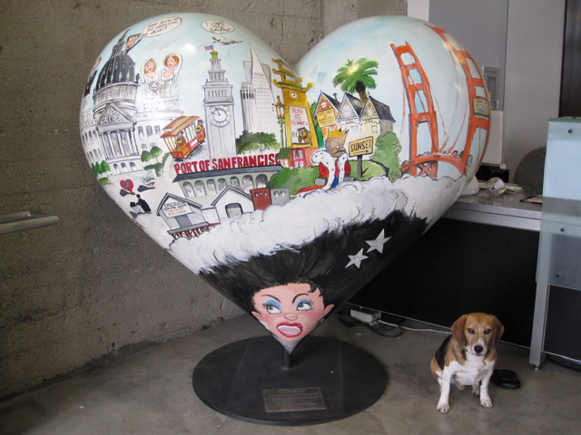

<--Previous Up Next-->

Beach Blanket
The ticket sellers at the Cartoon Art Museum kindly allowed Huxley to post with the late Phil Frank's Heart in SF. Mr. Frank drew a long-running comic strip set in San Francisco. This heart pays tribute to the long-running show "Beach Blanket Babylon", which features the entire city in a huge hat.